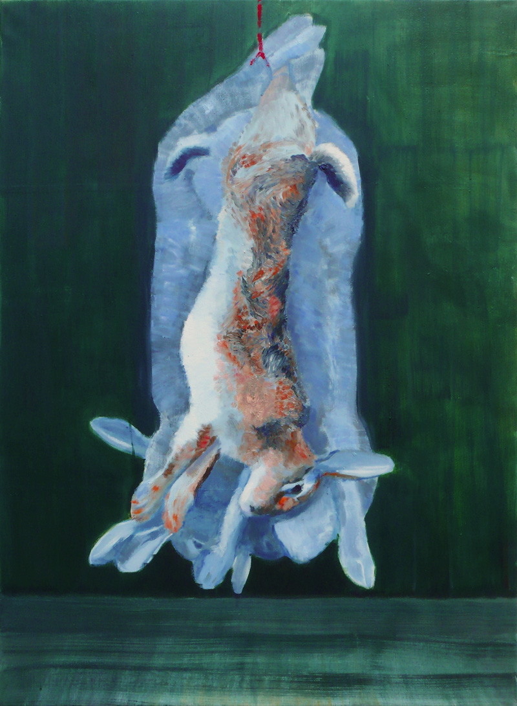
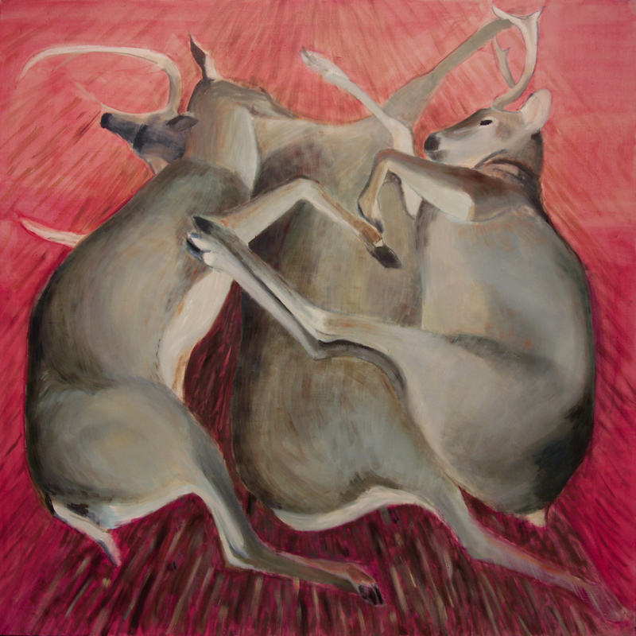
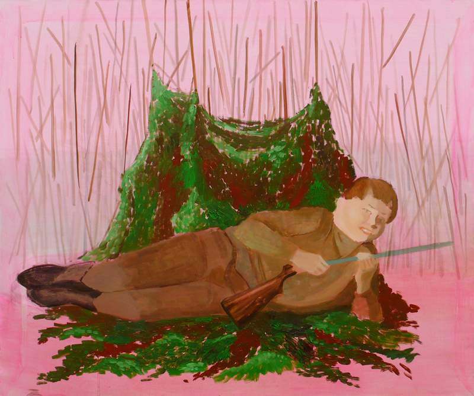
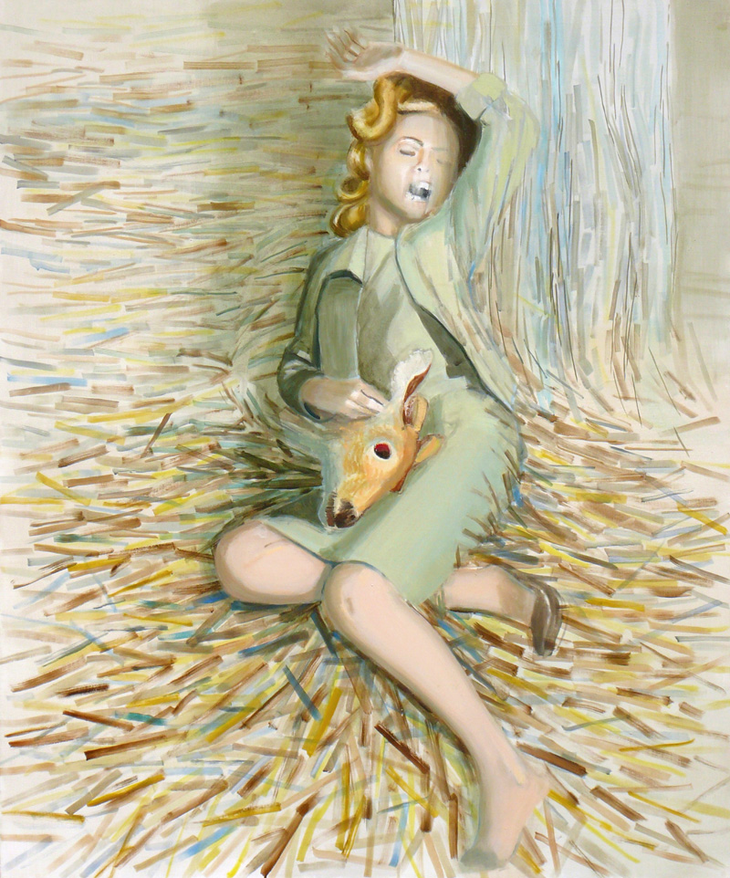

"Be fruitful, and multiply, and replenish the earth, and subdue it." Those are the trigger words for the series. Having become true, this sentence shows an ethical problem—how far can we go? Humanity has got indeed a destructive power...
"Dead Rabbits"
100×72 cm, oil on linen (2008)

"Dead Deers"
150×150 cm, oil on linen (2008)

"Hunter"
120×100 cm, oil on linen (2009)

"Lady"
120×100 cm, oil on linen (2009)

"Be fruitful, and multiply, and replenish the earth, and subdue it." Those are the trigger words for the series. Having become true, this sentence shows an ethical problem—how far can we go? Humanity has got indeed a destructive power...